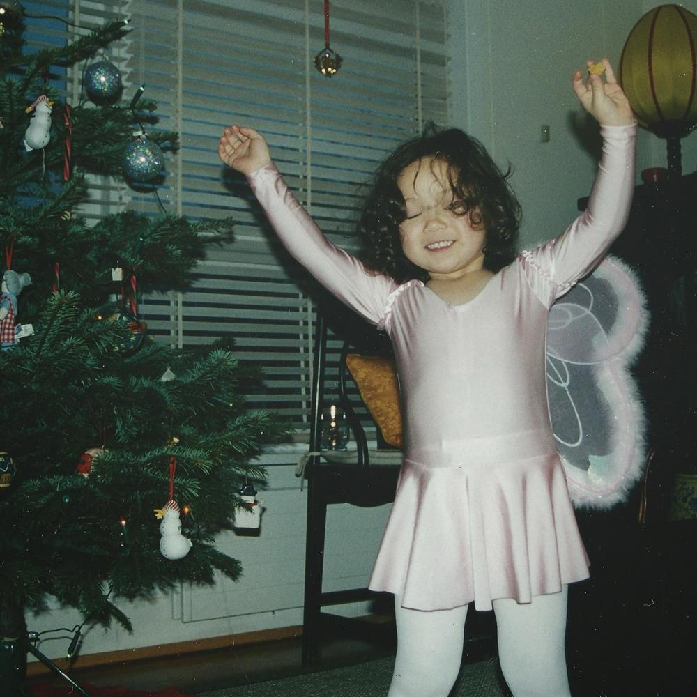

The Attic Desk
Notes, plans & one machine
The light comes in sideways for four hours a day, and then I stop.

There is a desk at the top of the stairs, under the roof, where it stays cold and the light comes in sideways. It is where I write things down.
I made this place because I kept losing things: sentences, plans, and one small machine that serves no purpose at all. Everything here lives on that desk, and everything is arranged the way I left it.
Two pages of notes, a list of things I am trying to build, and the machine itself — which does nothing useful and is the part I like most.
The Attic Desk
What is up there
The Notebook
Sixteen sentences I wrote down and did not want to lose — where each one came from, and who said it first.
Open the notebook → Room twoThe Workbench
Seven plans that might actually work. One is finished. Two are nearly finished. The rest are on paper, which is where plans are safest.
See the plans → Room threeThe Machine
Brass, walnut and one gear that drives nothing. It has a lever, and one very good reason to pull it.
Wind it up →